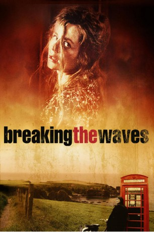

#5192 Breaking the Waves
Auszeichnungen: für 1 Oscars nominiert
 
 IMDB-Wertung: 7.9 / 10
IMDB-Wertung: 7.9 / 10  Tomatometer: 85
Tomatometer: 85  Metascore: 0
Metascore: 0 
Bess lebt in einem kleinen, streng gläubigen schottischen Dorf Mitte der 70er Jahre. Die unschuldige, naive junge Frau heiratet den weltoffenen, lockeren Bohrinselarbeiter Jan. Dieser weckt ihre Sexualität und Bess verfällt ihm bedingungslos. Als Jan bei einem Unfall schwer verletzt wird, kehrt er zurück. Jedoch querschnittsgelähmt ans Bett gefesselt. Er bittet seine Frau, sich einen Geliebten zu suchen und mit anderen Männern zu schlafen und ihm davon zu berichten. Die unschuldige, gottesfürchtige Bess ist einerseits überfordert, will aber andererseits alles für ihren Mann tun.
Jahr: 1996
Dauer: 159 Minuten
FSK: 12
Land: Dänemark Studio: Pandora FilmproduktionTonspuren:
Untertitel: Deutsch,
Auflösung: 1080p (1920x816) Größe: 13414 MB
Genre: Drama, Liebe
Regisseur:  Lars von Trier
Lars von Trier
Drehbuch: Guy Hibbert
Soundtrack:
Darsteller:
 Emily Watson als Bess McNeill
Emily Watson als Bess McNeill Stellan Skarsgård als Jan Nyman
Stellan Skarsgård als Jan Nyman- Katrin Cartlidge als Dodo McNeill
 Jean-Marc Barr als Terry
Jean-Marc Barr als Terry Adrian Rawlins als Dr. Richardson
Adrian Rawlins als Dr. Richardson Udo Kier als Sadistic Sailor
Udo Kier als Sadistic Sailor- Mikkel Gaup als Pits
- Roef Ragas als Pim
- Finlay Welsh als Coroner
- David Bateson als Young Sailor
 John Wark als Boy 2
John Wark als Boy 2- Jonathan Hackett als Priest
- Sandra Voe als Mother
- Phil McCall als Grandfather
- Robert Robertson als Chairman
- Desmond Reilly als An Elder
- Sarah Gudgeon als Sybilla
- David Gallacher als Glasgow Doctor
- Ray Jeffries als Man on Bus
- Owen Kavanagh als Man at Lighthouse
- Bob Docherty als Man on Boat
- Callum Cuthbertson als Radio Operator
- Gavin Mitchell als Police Officer 1
- Brian Smith als Police Officer 2
- Iain Agnew als Praying Man 1
- Charles Kearney als Praying Man 2
- Steven Leach als Praying Man 3
- Dorte Rømer als Nurse
- Anthony J. O'Donnell als Boy 1
- Ronnie McKellaig als Presenter
- Peter Bensted als Ugly Man
- Simon Towler Jorfaid als Boy in Film
Datei: X:\1996\Breaking the Waves (1996, FSK12, 1920x816).mkv seit 28.12.2016
Festplatte: HD 1996-2002
 Es gibt insgesamt 78 Filme in der Gruppe '1996'
Es gibt insgesamt 78 Filme in der Gruppe '1996'